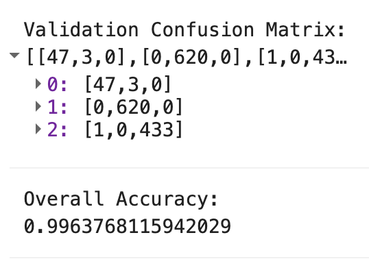
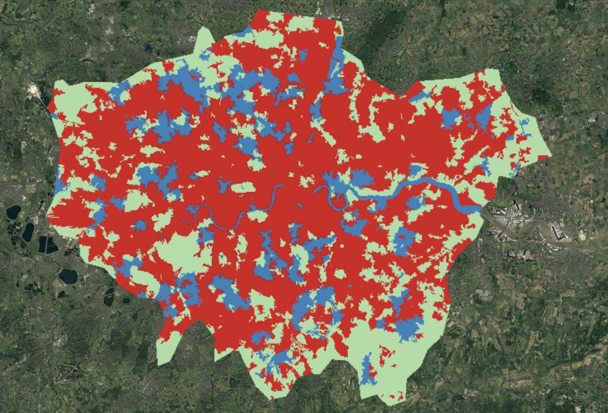

Week 7: Advanced Classification
Summary
This week extended the classification framework from Week 6 in two directions: downward — into sub-pixel analysis where we acknowledge that a single pixel contains multiple land cover types — and upward — into Object-Based Image Analysis (OBIA) where we group pixels into meaningful spatial units before classifying. Both approaches address the same fundamental limitation of pixel-based classification: the assumption that each pixel is spectrally pure and spatially independent.
Sub-pixel (spectral unmixing) starts from the observation that at 30 m (Landsat) or even 10 m (Sentinel-2), most urban pixels contain a mixture of materials — a pixel might be 40% rooftop, 30% tree canopy, and 30% road. Linear spectral unmixing models each pixel’s reflectance as a weighted sum of “endmember” spectra representing pure land cover types, then solves for the fractional abundances. The practical demonstrated this in GEE using the .unmix() function with endmembers extracted from the image itself. The key constraint is that fractions should be non-negative and sum to one — without this, physically impossible results (negative land cover fractions) emerge. Foody (2004) notes that the accuracy of unmixing depends critically on endmember selection: if the chosen endmembers do not represent the actual spectral variability in the scene, the estimated fractions will be biased. A practical challenge is accuracy assessment — the standard confusion matrix assumes discrete classes, so evaluating continuous fractional outputs requires either hardening the fractions (assigning each pixel to its dominant class, losing the sub-pixel information) or comparison against high-resolution reference imagery.
Object-Based Image Analysis (OBIA) moves in the opposite direction, aggregating pixels into spatially contiguous, spectrally homogeneous segments before classification. The practical used Simple Non-Iterative Clustering (SNIC), which generates superpixels from a regular seed grid by iteratively assigning pixels to the nearest cluster based on a combined metric of spectral distance and spatial proximity. The compactness parameter controls the trade-off: higher values produce regular, compact superpixels (approaching a grid), while lower values allow segments to adapt to image boundaries such as road edges, rivers, and building footprints. Once segmented, each object is characterised by its mean spectral values, standard deviation (capturing internal heterogeneity), and derived indices (e.g., NDVI per object) — features that encode spatial context impossible to capture at the pixel level (Matarira et al. 2023). Classification then operates on these object-level features rather than individual pixels, which eliminates the “salt-and-pepper” noise that plagued the Week 6 output.
The lecture also devoted significant time to accuracy assessment, and specifically to the pitfalls that inflate reported accuracy beyond what the model actually achieves. The standard framework — confusion matrix, overall accuracy (OA), producer’s accuracy (PA), and user’s/consumer’s accuracy (UA) — is well established but routinely misapplied. Karasiak et al. (2022) demonstrated that when training and testing samples are drawn from spatially proximate locations (e.g., from the same polygon or adjacent pixels), spatial autocorrelation means the test data is not truly independent — it provides a “sneak preview” of the training signatures. Their experiments showed that conventional random splits can overestimate accuracy by 10–15 percentage points compared to spatially blocked cross-validation, where training and testing sets are separated by a minimum geographic distance. The lecture also addressed the Kappa coefficient debate: despite its widespread use as an agreement metric that accounts for chance, multiple authors have argued it should be abandoned because it is redundant with OA and its “expected agreement” baseline is often nonsensical in classification contexts.
Application
Building directly on Week 6’s pixel-based classification of Greater London, I implemented an OBIA workflow in GEE to address the spectral confusion and salt-and-pepper noise that degraded the earlier result.
The workflow proceeded in three stages. First, I generated a SNIC segmentation of the Sentinel-2 median composite:
```{js, eval=FALSE} // Generate seed grid and run SNIC segmentation var seeds = ee.Algorithms.Image.Segmentation.seedGrid(30, ‘hex’);
var snic = ee.Algorithms.Image.Segmentation.SNIC({ image: composite, compactness: 1, connectivity: 8, neighborhoodSize: 60, seeds: seeds });
// Compute per-object standard deviation as additional feature var clusters = snic.select(‘clusters’); var stdDev = composite.addBands(clusters) .reduceConnectedComponents(ee.Reducer.stdDev(), ‘clusters’, 100);
// Compute per-object NDVI var NDVI = snic.normalizedDifference([‘SR_B5_median_mean’, ‘SR_B4_median_mean’]);
// Combine mean spectral bands, std dev, and NDVI into classification input var objectImage = ee.Image.cat([ snic.select(meanBands), stdDev, NDVI]).float(); ```
Second, I trained a Random Forest classifier on the object-level features using training polygons drawn over water, urban, vegetation, and bare earth classes. Third, I applied the classifier to produce the OBIA land cover map.


The OBIA result (Figure 8.2) is visually superior to the pixel-based classification from Week 6: the Thames is cleanly delineated, park boundaries are coherent, and the salt-and-pepper noise is eliminated. The confusion matrix (Figure 8.1) reports an overall accuracy of 99.6%, with near-perfect class-level metrics. However, this figure requires critical scrutiny — a point I return to in the Reflection.
The improvement is attributable to two factors. First, the SNIC segmentation groups spectrally similar adjacent pixels, meaning that isolated shadow pixels in central London are absorbed into their surrounding urban objects rather than being classified independently. This is essentially a spatial regularisation that encodes the assumption that land cover is spatially continuous — an assumption that holds in most urban contexts. Second, the object-level features — particularly the within-object standard deviation — provide information about internal heterogeneity that pixel-level band values cannot capture. Matarira et al. (2023) demonstrated this advantage for informal settlement mapping in Dar es Salaam, finding that OBIA using SNIC superpixels with combined Sentinel-1 (SAR) and Sentinel-2 (optical) features outperformed pixel-based RF by approximately 8 percentage points in overall accuracy. Their finding that texture heterogeneity within objects was the most discriminative feature for separating formal from informal settlements resonates with my London results, where within-object standard deviation helped distinguish spectrally similar but texturally different urban classes.
Reflection
The headline finding from this week — 99.6% overall accuracy — is precisely the kind of result that should trigger scepticism rather than celebration. As Karasiak et al. (2022) demonstrate, spatial dependence between training and test sets is the most common and most consequential pitfall in remote sensing accuracy assessment. In my practical, validation points were extracted from the same buffered polygons used for training. Because neighbouring pixels share atmospheric conditions, illumination geometry, and land cover characteristics (Tobler’s First Law), the testing data was statistically correlated with the training data — meaning the accuracy estimate reflects the model’s ability to interpolate within known regions rather than generalise to unseen areas.
A more rigorous approach would implement spatial cross-validation — for example, dividing the study area into spatially disjoint blocks and ensuring that no block contributes pixels to both training and testing sets. Karasiak et al. (2022) showed that this typically reduces reported accuracy by 10–15 percentage points, which would bring my result closer to a realistic 85–90% — still respectable, but a fundamentally different claim than 99.6%. This distinction matters for policy applications: if the GLA were to use an OBIA classification to monitor Policy G5 (Urban Greening Factor) compliance, a model that actually achieves 85% accuracy would produce measurably different greening estimates than one assumed to achieve 99%.
The Kappa coefficient debate is also instructive. Kappa attempts to quantify agreement beyond chance by comparing observed accuracy to the accuracy expected if the classifier assigned classes randomly in proportion to their marginal frequencies. However, as the lecture noted, this “expected agreement” baseline is arbitrary — there is no reason to assume that a random proportional classifier is the correct null model. In practice, Kappa values are almost always lower than OA but highly correlated with it, adding no independent information. The emerging consensus in the literature is to report the full confusion matrix with PA and UA per class, supplemented by the F1 score for imbalanced datasets, rather than relying on any single summary metric.
Looking forward, the progression across Weeks 6 and 7 — from pixel-based RF to OBIA with SNIC — has demonstrated that classification is not primarily a machine learning problem but a feature engineering and validation design problem. The RF algorithm was identical in both weeks; what changed was the input representation (pixels vs. objects with derived features) and, implicitly, the spatial logic embedded in the workflow. For my own future work, the key takeaway is that time spent on thoughtful segmentation, feature construction, and rigorous validation design will yield larger accuracy improvements than experimenting with more complex classifiers.